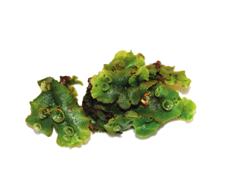
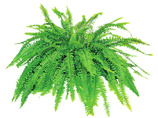
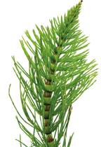
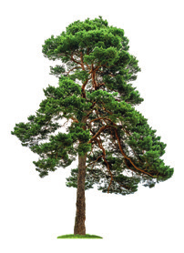
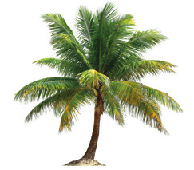

Las plantas poseen células eucariotas, con un núcleo separado del citoplasma en el que se aloja el material genético. Cuentan, además, con algunas características que no presentan las células del resto de los seres vivos.
Tienen una pared celular que rodea la membrana plasmática y que le da rigidez.
Contienen cloroplastos con un pigmento de color verde, denominado clorofila, con el que captan la luz.
Las vacuolas, de gran tamaño, desplazan al núcleo hacia un lado.
Clasificación de las plantas
Las plantas se clasifican en plantas sin flores y plantas con flores.
Plantas sin flores. Carecen de flores y semillas.
Plantas con flores. Son plantas con flores y semillas que presentan vasos conductores.
Briófitas
No tienen vasos conductores.

MusgoAlgas verdes
Pteridófitas
Disponen de vasos conductores.

Helecho

Cola de caballo
Gimnospermas
Sus flores producen semillas que no están encerradas en frutos.

Pino

Palmera de coco
Angiospermas
Sus flores producen semillas encerradas en un fruto.